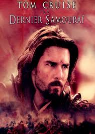

Le Dernier Samouraï (The Last Samurai) est un film néo-zélando-nippo-américain réalisé par Edward Zwick, sorti en 2003. Il s'agit d'une adaptation libre des événements de la rébellion de Satsuma de 1877. Le personnage principal est par ailleurs inspiré en partie de Jules Brunet, un officier français qui démissionna de l'armée française par fidélité envers le dernier shogun Tokugawa Yoshinobu qui avait précédemment passé un traité d'amitié avec Napoléon III.